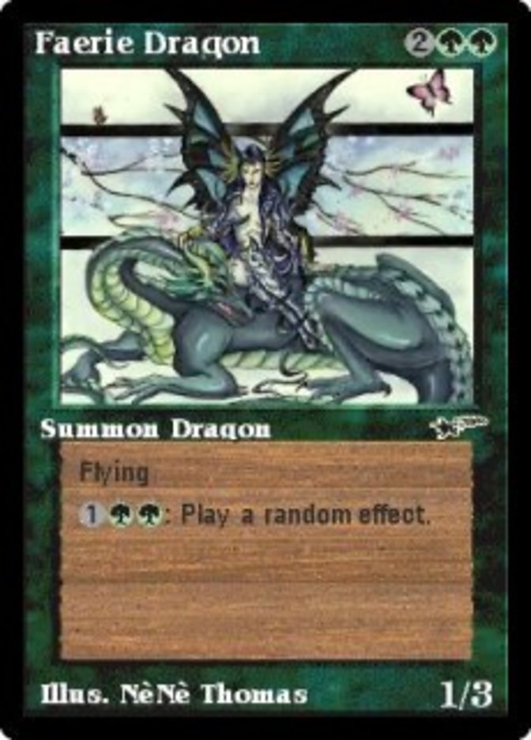

MTG Info
Faerie Dragon


This is a slight redesign of the digital-only card Faerie Dragon from MicroProse's 1997 computer game Magic: the Gathering (also known as "Shandalar"), using modern design principles of randomness in Magic. The main difference here is that most of the time, something good will happen to one of your creatures OR something bad will happen to an opponent's, while the original was much more wildly random in its outcomes. The list of possible effects remains largely unchanged with minor tweaks, such as the chance of simply changing a creature's color being reduced from 25% to 10%. (Note that "spellbooks" in Magic don't quite work like this, but it's the closest mechanic that exists, and I couldn't think up a better word.)
Faerie Dragon's spellbook
-
Choose a random creature you control. It gains trample and gets +X/+0
until end of turn, where X is its power. At the beginning of the next
end step, destroy that creature if it attacked this turn. (Berserk)
-
Choose a random creature you control. If that creature has power 2 or
less, it can’t be blocked this turn.
-
Choose a random creature you control. If that creature has toughness 5
or greater, it gets +4/-4 until end of turn. Otherwise, it gets +4/-X
until end of turn, where X is its toughness minus 1. (Blood Lust)
-
Choose a random creature you control and a random color. That creature
becomes the chosen color. (Purelace, etc.)
-
Choose a random creature you control. It gains flying until end of turn. (Jump)
-
Choose a random creature you control. It gets +3/+3 until end of turn. (Giant Growth)
-
Choose a random creature you control. It gains banding until end of
turn.
- Choose a random creature you control. Untap it. (Twiddle)
- Choose a random creature you control. Put a +1/+1 counter on it.
-
Choose a random creature an opponent controls. It can't regenerate this
turn.
-
Choose a random creature an opponent controls and a random color. That
creature becomes the chosen color.
- Choose a random creature an opponent controls. Tap it. (Twiddle)
-
Choose a random creature an opponent controls. It gets -2/-0 until end
of turn.
-
Choose a random creature an opponent controls. Return that creature to
its owner's hand. (Unsummon)
-
Choose a random creature an opponent controls. Faerie Dragon deals 1
damage to that creature.
-
Choose a random creature an opponent controls. Faerie Dragon deals 3
damage to that creature. (Lightning Bolt)
-
Choose a random creature an opponent controls. That creature has base
power and toughness 0/2 until end of turn. (Sorceress Queen)
-
Choose a random creature an opponent controls. Exile that creature. Its
controller gains life equal to its power. (Swords to Plowshares)
-
Choose a random creature an opponent controls. Put a -1/-0 counter on
it.
-
Choose a random creature an opponent controls. Put a -1/-1 counter on
it.